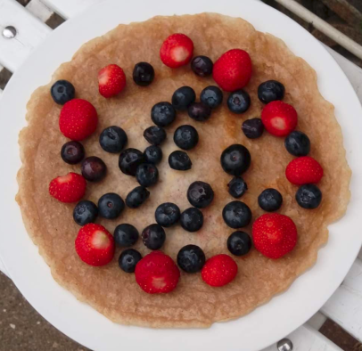

Vegan Pancakes

Ingredients
- 130g oat flakes
- 2 medium bananas
- 70g potato flour
- 1 teaspoon ground cinnamon
- 1 cup water
- 3 tablespoon olive oil
- fruits like strawberry, blueberry. banana, pineapple
Steps
- Put oat flakes,2 bananas, potato flour, water and ground cinnamon in the blender and mix them
- warm up olive oil on pan
- Pour batter onto pan
- Brown on both sides
- Add fruits
- serve hot